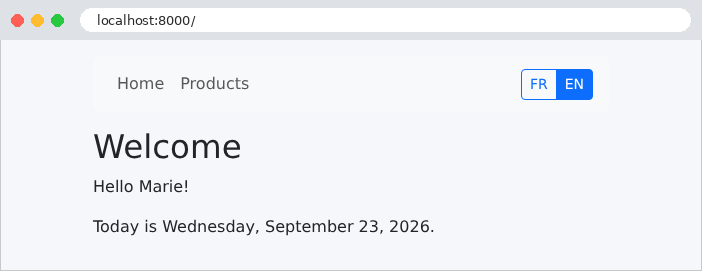
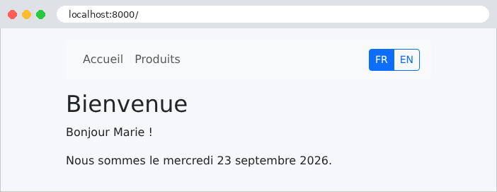

5. Internationalisierung
Eine internationalisierte Anwendung zeigt ihre Texte in der Sprache des Benutzers an. Die Fallstudie ist auf Französisch und Englisch verfügbar. Das Prinzip ist einfach: Die Templates enthalten als „zu übersetzen“ markierten Text, und ein Wörterbuch für jede Sprache ordnet jedem Text seine Übersetzung zu. Die gewählte Sprache wird in einem Cookie gespeichert.
[Django] verwendet dafür [gettext], das Übersetzungssystem des GNU-Projekts, das auch [Python] kennt (das Modul [gettext] der Standardbibliothek) und das in vielen Open-Source-Programmen zu finden ist. Bei [gettext] ist der Schlüssel eines Textes der Text selbst in der Originalsprache: Ein Template schreibt [{% translate "Home" %}], und das französische Wörterbuch ordnet „Home“ dem Text „Accueil“ zu. Eine Seite bleibt somit auch ohne Wörterbuch lesbar und funktionsfähig: Der Text wird in der Originalsprache angezeigt. Das unterscheidet sich von den Versionen [Symfony], [Laravel], [Flask], [Spring MVC], [ASP.NET Core MVC] und [NestJS] der Fallstudie, die abstrakte Schlüssel verwendeten ([MENU.HOME]). Wörterbücher sind Textdateien im Format [.po] (Portable Object), die Werkzeuge aus dem Code extrahieren und Übersetzungssoftware bearbeiten kann; [Django] liest ihre kompilierte Fassung, die [.mo]-Dateien (Machine Object). [gettext] kann Texte außerdem nach den Regeln jeder Sprache in den Plural setzen. [Django] selbst ist auf diese Weise übersetzt: Dank seiner Wörterbücher kann es seine Fehlermeldungen auf Französisch anzeigen (seit Beispiel 08 waren sie auf Englisch, der Standardsprache). Die Formatierung von Datums- und Betragsangaben bleibt dieselbe wie in Beispiel 16.
5.1. Beispiel 22: Eine zweisprachige Anwendung
5.1.1. Die Konfiguration: config/settings.py
- Zeile 14: die Standardsprache der Anwendung, die für Anfragen verwendet wird, die keine Sprache angeben (Beispiel 08). Dies ist auch die Sprache der Template-Texte; Englisch benötigt daher kein Wörterbuch;
- Zeilen 15–18: die von der Anwendung unterstützten Sprachen;
- Zeile 20: [LOCALE_PATHS], die Ordner, in denen [Django] nach den Wörterbüchern der Anwendung sucht, zusätzlich zu den Ordnern [locale] jeder Anwendung (einschließlich der von [Django] selbst). Jedes Wörterbuch liegt in einem Ordner [<language>/LC_MESSAGES] unter dem Namen [django.po] (und [django.mo]): Das ist die von [gettext] geforderte Organisation;
- Zeile 22: der Name des Cookies, das die gewählte Sprache speichert. [django_language] ist der Standardwert; wir führen ihn hier auf, damit er sichtbar ist;
- Zeilen 29–33: Die Middleware [LocaleMiddleware] von [Django] ersetzt unsere Middleware [SetLanguage] aus Beispiel 16. Für jede Anfrage wählt sie die Sprache aus den in der Einstellung [LANGUAGES] angegebenen aus: die im Sprach-Cookie angegebene Sprache, falls vorhanden; andernfalls die bevorzugte Sprache des Browsers anhand des Headers [Accept-Language] (Beispiel 12); andernfalls [LANGUAGE_CODE]. Sie aktiviert die Sprache ([translation.activate], Beispiel 16) und speichert sie in [request.LANGUAGE_CODE]. Schließlich fügt sie der Antwort den Header [Content-Language] (die Sprache der Seite) hinzu, außerdem den Header [Vary: Accept-Language], der Caches darauf hinweist, dass die Antwort von diesem Header abhängt;
- Zeile 43: Der Kontextprozessor [i18n] fügt den Templates die Variablen [LANGUAGE_CODE] (die Sprache der Anfrage), [LANGUAGES] und [LANGUAGE_BIDI] (wahr für eine von rechts nach links geschriebene Sprache) hinzu.
5.1.2. Das Wörterbuch: locale/fr/LC_MESSAGES/django.po
Eine [.po]-Datei ist eine Folge von Einträgen, die durch Leerzeilen getrennt sind:
- Zeilen 1–4: ein Kommentar;
- Zeilen 5–11: der Kopfeintrag: ein leerer String ([msgid ""]), dessen „Übersetzung“ ([msgstr]) die Informationen zum Wörterbuch enthält: die Sprache, den Zeichensatz und die Pluralregel der Sprache ([Plural-Forms]: im Französischen zwei Formen, die zweite für jede Zahl größer als 1);
- Zeilen 13–15: ein Standardeintrag: [msgid] ist der Quelltext, wie er im Template steht; [msgstr] ist seine Übersetzung. Die Zeile [#:] gibt an, wo der Text gefunden wurde (ein Template und eine Zeile): Das ist ein Kommentar für den Übersetzer;
- Zeilen 25–28: Text mit einer Variablen. Im Wörterbuch wird eine Variable als [%(name)s] geschrieben (die Syntax der Formatstrings von [Python], Beispiel 10); die Zeile [#, python-format] kennzeichnet dies für die Werkzeuge. Die Übersetzung darf die Variable an eine andere Stelle setzen oder die Interpunktion um sie herum ändern (im Französischen steht vor dem Ausrufezeichen ein Leerzeichen);
- Zeilen 47–52: eine Pluralform: [msgid] ist die Singularform, [msgid_plural] ist die Pluralform, und jede Form der Übersetzung ist nummeriert ([msgstr[0]], [msgstr[1]]), in der Reihenfolge, die die Regel [Plural-Forms] vorgibt. Im Französischen sind 0 und 1 Singular, während im Englischen 0 Plural ist („0 products“): [gettext] weiß das dank dieser Regel. Das ist eine Verbesserung gegenüber dem „product(s)“ der früheren Versionen der Fallstudie.
Diese Datei wird nicht von Hand geschrieben. Der Befehl:
durchsucht die Templates des Projekts und den [Python]-Code, extrahiert alle als „zu übersetzen“ markierten Texte und erstellt oder aktualisiert die Datei [locale/fr/LC_MESSAGES/django.po]: Neue Texte werden mit leerer Übersetzung hinzugefügt, bestehende Übersetzungen bleiben erhalten. Es bleibt nur noch, die Übersetzungen zu schreiben, entweder in einem Texteditor oder in spezialisierter Software (zum Beispiel [Poedit]). Der Befehl:
kompiliert anschließend jede [.po]-Datei in eine [.mo]-Datei – eine schnell lesbare Binärdatei –, die von [Django] verwendet wird. Nach einer Kompilierung müssen Sie den Server neu starten: Die Wörterbücher werden nur einmal geladen. Diese beiden Befehle verwenden die Programme von [gettext] ([xgettext], [msgfmt] ...), die installiert sein müssen (unter [Linux] das Paket [gettext]; unter [Windows] zum Beispiel die Binärdateien, die auf der Website mlocati.github.io angeboten werden). Da die Datei [django.mo] mit dem Beispiel mitgeliefert wird, ist die Installation dieser Pakete zum Ausführen nicht erforderlich.
5.1.3. Sprachauswahl: Routen und Views
- Zeile 12: [re_path] beschreibt eine Route mit einem regulären Ausdruck statt mit der Syntax von [path] (Beispiel 02). [^] und [$] markieren Anfang und Ende des Pfades; [(?P<code>fr|en)] ist eine benannte Gruppe: Der Text, den sie erkennt – [fr] oder [en] (der senkrechte Strich bedeutet „oder“) –, wird der View im Parameter [code] übergeben. Eine andere Sprache entspricht keiner Route: [/language/de] liefert einen 404-Fehler.
- Zeilen 14–25: Die Views für die Startseite und die Produkte kennen die Sprache nicht; sie liefern Rohdaten (einen Namen, ein Datum, Beträge in Cent). Übersetzung und Formatierung übernehmen die Templates. Die Klasse [Product] hat einen Namen und einen Preis in Cent; die Bibliothek [formats] ist die aus Beispiel 16: Ihr Filter [long_date] schreibt ein Datum im „ausführlichen“ Format der aktiven Sprache („Wednesday, September 23, 2026“, „mercredi 23 septembre 2026“), und ihr Filter [money] zeigt einen Betrag an;
- Zeilen 30–37: Die View zum Sprachwechsel antwortet, indem sie den Benutzer auf die Seite zurückleitet, von der er kam; der Benutzer kehrt in der neuen Sprache auf seine ursprüngliche Seite zurück;
- Zeilen 35–36: Die Antwort enthält ein Cookie, das der Browser mit jeder Anfrage zurücksendet. [set_cookie] erhält seinen Namen, seinen Wert und seine Optionen: [max_age], seine Lebensdauer in Sekunden (ein Jahr); [httponly=True] macht es für das [JavaScript] der Seite unsichtbar; [samesite="Lax"] verhindert, dass der Browser es mit einer POST-Anfrage sendet, die von einer anderen Website stammt. Es wird der Antwort als Header [Set-Cookie] hinzugefügt;
- Zeilen 43–49: Die ursprüngliche Seite wird durch den Header [Referer] der Anfrage angegeben (die falsch geschriebene Variante mit einem einzigen [r] ist die des HTTP-Standards), den der Browser mit der URL der Seite füllt, die den Link enthielt. Dieser Header stammt jedoch vom Client, der beliebige Inhalte hineinschreiben kann. Würde man blind an diese Adresse umleiten, wäre unsere Anwendung ein Open Redirect: Ein bösartiger Link mit unserem Domainnamen könnte den Benutzer auf eine schädliche Website schicken. Die Funktion [url_has_allowed_host_and_scheme] in [Django] ([django.utils.http]) prüft, ob eine Adresse relativ ist oder auf einen der erlaubten Rechner verweist (hier den der Anfrage: [request.get_host()]); andernfalls wird der Benutzer auf die Startseite umgeleitet.
[Django] stellt außerdem eine vorgefertigte View zum Wechseln der Sprache bereit, [django.views.i18n.set_language], die dieselbe Aufgabe über ein Formular (POST) erledigt; wir haben eine eigene geschrieben, um das Prinzip zu zeigen und den Sprachwechsel über einen einfachen Link zu ermöglichen.
5.1.4. Übersetzen in Templates
- Zeile 4: Das Attribut [lang] der Seite gibt Browsern, Suchmaschinen und Screenreadern ihre Sprache an; [LANGUAGE_CODE] ist die Sprache der Anfrage, bereitgestellt vom Kontextprozessor [i18n];
- Zeile 9: Der Seitentitel wird von der Seite selbst geliefert, bereits übersetzt (Block [title]).
- Zeile 2: Die Übersetzungs-Tags befinden sich in der Bibliothek [i18n], die jedes Template laden muss (Beispiel 16);
- Zeilen 6–7: Das Tag [{% translate %}] liefert die Übersetzung eines Textes in die Sprache der Anfrage (oder den Text selbst, falls es keine Übersetzung gibt);
- Zeilen 10–17: Das Tag [{% get_available_languages %}] speichert die Sprachen aus der Einstellung [LANGUAGES] – Paare aus (Code, Name) – in einer Variablen, die die Schleife anschließend durchläuft ([for code, name in languages]). Eine Schaltfläche pro Sprache, die auf die View [/language/<code>] verweist. Die aktuelle Sprache ist hervorgehoben ([btn-primary], ausgefüllte Schaltfläche).
- Zeile 4: der Block [title], übersetzt, für das Eltern-Template;
- Zeile 9: Das Tag [{% blocktranslate %}] übersetzt Text mit Variablen: [{{ name }}] wird zu [%(name)s] im Wörterbuch. Hier sind nur einfache Variablen zulässig (keine Filter oder Punkte);
- Zeile 11: Eine berechnete Variable kann daher nur über [with] in den Text eingefügt werden: Das Datum, vom Filter [long_date] in der Sprache der Anfrage formatiert, wird in der Variablen [date] im Text abgelegt.
- Zeile 15: der Filter [money], dessen Ergebnis von der Sprache abhängt;
- Zeile 21: der Plural. [count n=products|length] liefert die Zahl, die die Form bestimmt ([length], Beispiel 14); das Tag [{% plural %}] trennt die Singularform von der Pluralform, die in der Quellsprache geschrieben ist. Produktnamen werden jedoch nicht übersetzt: Sie sind Daten, die in einer realen Anwendung aus einer Datenbank stammen würden.
Außerhalb von Templates übernehmen die Funktionen des Moduls [django.utils.translation] die Übersetzung: [gettext("Home")] (häufig unter dem Kurznamen [_] importiert: [_("Home")]), [ngettext] für den Plural und [gettext_lazy], eine „träge“ Übersetzung, die erst bei der Verwendung des Textes erfolgt: Sie ist die richtige Wahl für Text, der beim Laden eines Moduls definiert wird (zum Beispiel das Label eines Formularfelds), wenn die Sprache der Anfrage noch nicht bekannt ist. Die Fallstudie verwendet sie.
5.1.5. Ausführung
Die Startseite auf Englisch (der Standardsprache), dann auf Französisch nach einem Klick auf die Schaltfläche „FR“:


Die Produktseite in beiden Sprachen. Die Beträge folgen den Konventionen der jeweiligen Sprache:


Der Sprachwechsel, gesehen mit [curl]. Die Option [-H] liefert den Header [Referer] , den der Browser senden würde:
Die Umleitung führt Sie zur ursprünglichen Seite zurück, und das Cookie wird mit einer Gültigkeit von einem Jahr gesetzt. Die Antwort selbst ist noch auf Englisch ([Content-Language: en]): Die Sprache wurde nur beim Eintreffen der Anfrage gewählt, bevor das Cookie existierte. Ein [Referer] , der auf eine andere Website verweist, ermöglicht keine Umleitung dorthin:
Der Benutzer kehrt zur Startseite zurück und bleibt auf unserer Website. Schließlich die Startseite, angefordert mit dem Cookie [django_language=fr] (Option [-b] von [curl]):
Das Cookie ist nicht signiert: Es wird im Klartext übertragen, und der Benutzer kann es ändern. Das ist kein Problem: Es enthält keine vertraulichen Informationen, und [LocaleMiddleware] akzeptiert nur die in der Einstellung [LANGUAGES] angegebenen Sprachen. Das folgende Beispiel zeigt, wie viel Vertrauen man einem Cookie entgegenbringen kann. Ohne Cookie liest [LocaleMiddleware] den Header [Accept-Language] des Browsers: [curl -H "Accept-Language: fr-FR,fr;q=0.9" http://localhost:8000/] rendert die Seite auf Französisch. Die beiden Mechanismen ergänzen sich also ganz natürlich: die Sprache des Browsers beim ersten Besuch, danach die vom Benutzer gewählte Sprache. Ein dritter, verbreiteter Ansatz legt die Sprache in die URL ([/fr/products]): Die Funktion [i18n_patterns] von [Django] stellt den Routen dann die Sprache voran, und [LocaleMiddleware] liest sie aus dem Pfad. Diese Fallstudie konzentriert sich auf das Cookie.